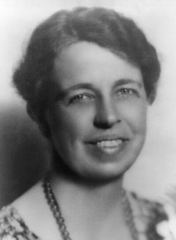
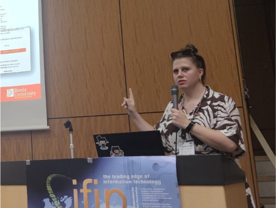
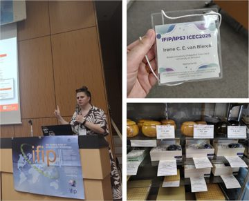
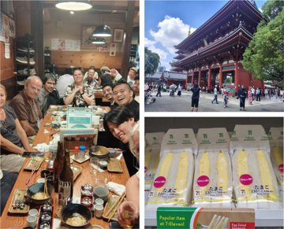

I am a lecturer in artificial intelligence at Breda University of Applied Sciences and a PhD candidate in computer science at the University of Antwerp, specialising in algorithmic fairness. My multidisciplinary research integrates perspectives from the humanities, the social sciences and the natural sciences to foster more responsible AI systems.
I also bring practical experience as a data scientist in the public sector, where I supported data-driven policy and decision-making at both municipal and intermunicipal levels by developing dashboards and machine learning applications.
Latest Unveiling gender bias in LLM-generated hero and heroine narratives, Entertainment Computing (2025).
The future belongs to those who believe in the beauty of their dreams.

From a young age, I noticed when people were treated unfairly and wanted to understand why. I was not always the one people expected to succeed, so I learned to work hard and keep going. When I studied Eleanor and Franklin Delano Roosevelt, I recognised both of those things in them. They persevered through their own challenges and used that strength to make life fairer for others. Their example gave my sense of justice a direction. Today, it drives my PhD in algorithmic fairness, and Eleanor’s words above are the ones I pass on to my students, so they can find their own direction too.
1News
Gave the talk Het proces tegen Niemand at Volt’s Spinoza Circle in Utrecht.
Presented the paper and ran a hands-on workshop at ICEC 2025 in Tokyo.
My first journal article, Unveiling gender bias in LLM-generated hero and heroine narratives, is out in Entertainment Computing (open access).
Started my PhD on algorithmic fairness at the University of Antwerp.
2Research
My PhD in computer science at the University of Antwerp develops methods for building fairness principles into AI systems.A suspicious share of the fairness theory on my desk was written by men called John (Rawls, Roemer).
My first study examined gender bias in hero and heroine narratives generated by large language models (Entertainment Computing, 2025). At ICEC 2025 in Tokyo I turned its method into a live workshop in which participants generated narratives themselves and analysed the gender patterns that appeared.

PhD project
- Fair by design: translating theories of justice into machine learning 2025–
- University of Antwerp, part-time. Supervised by Prof. Toon Calders. How can principles from political philosophy, such as equality of opportunity, be turned into measurable fairness criteria and built into the way AI systems are trained and evaluated?
3Publications
Peer-reviewed
-
van Blerck, I. C. E., Soares de Lima, E., Neggers, M. M. E., & Calders, T. (2025). Unveiling gender bias in LLM-generated hero and heroine narratives. Entertainment Computing, 55, 100972. Open access
Read the articleAbstract
This article investigates gender bias in narratives generated by Large Language Models (LLMs) through a two-phase study. Building on our existing work in narrative generation, we employ a structured methodology to analyze the influence of protagonist gender on both the generation and classification of fictional stories. In Phase 1, factual narratives were generated using six LLMs, guided by predefined narrative structures (Hero’s Journey and Heroine’s Journey). Gender bias was quantified through specialized metrics and statistical analyses, revealing significant disparities in protagonist gender distribution and associations with narrative archetypes. In Phase 2, counterfactual narratives were constructed by altering the protagonists’ genders while preserving all other narrative elements. These narratives were then classified by the same LLMs to assess how gender influences their interpretation of narrative structures. Results indicate that LLMs exhibit difficulty in disentangling the protagonist’s gender from the narrative structure, often using gender as a heuristic to classify stories. Male protagonists in emotionally driven narratives were frequently misclassified as following the Heroine’s Journey, while female protagonists in logic-driven conflicts were misclassified as adhering to the Hero’s Journey. These findings provide empirical evidence of embedded gender biases in LLM-generated narratives, highlighting the need for bias mitigation strategies in AI-driven storytelling to promote diversity and inclusivity in computational narrative generation.
Cite
@article{vanblerck2025unveiling, title = {Unveiling gender bias in {LLM}-generated hero and heroine narratives}, author = {van Blerck, Irene C. E. and Soares de Lima, Edirlei and Neggers, Margot M. E. and Calders, Toon}, journal = {Entertainment Computing}, volume = {55}, pages = {100972}, year = {2025}, doi = {10.1016/j.entcom.2025.100972} } -
van Blerck, I. C. E., & Soares de Lima, E. (2025). Exploring gender bias in LLM-generated hero and heroine narratives. In Entertainment Computing – ICEC 2025 IFIP TC 14 Workshops (Lecture Notes in Computer Science, pp. 11–16). Springer.
Publisher’s pageCite
@inproceedings{vanblerck2025exploring, title = {Exploring gender bias in {LLM}-generated hero and heroine narratives}, author = {van Blerck, Irene C. E. and Soares de Lima, Edirlei}, booktitle = {Entertainment Computing -- ICEC 2025 IFIP TC 14 Workshops}, series = {Lecture Notes in Computer Science}, pages = {11--16}, publisher = {Springer}, year = {2025}, doi = {10.1007/978-3-032-02534-0_3} }
Reports
van Blerck, I. (2017). Hoofdelijke omslag: gemeentelijke belastingen in de negentiende eeuw. Feasibility study for the Historical Sample of the Netherlands (HSN), International Institute of Social History.
Theses
van Blerck, I. (2018). Where do you work? Predicting local company units in the Netherlands. MSc thesis, Tilburg University. Written during a research internship at Statistics Netherlands (CBS).
van Blerck, I. (2016). Full & fair employment: Labor policy by Bernie Sanders and Franklin D. Roosevelt. BA thesis, University College Roosevelt (Utrecht University).
4Teaching
Since 2021, I have taught in the Applied Data Science & AI bachelor’s programme at Breda University of Applied Sciences. Together with colleagues, I co-designed the programme, including its curriculum and its distinctive teaching approach, in which students work with real clients and their data from day one.
Current courses
5Talks & Socratic dialogues
| 2026 | Het proces tegen Niemand: Socrates, Spinoza en de vraag die niemand stelde. Volt’s Spinoza Circle, Utrecht, 13 November 2026. |
| 2026 | Responsible AI in practice. Argumentative speech and Socratic dialogue with CEOs, board members and students, Industry Board Day, Breda University of Applied Sciences. |
| 2025 | Unveiling gender bias in LLM-generated hero and heroine narratives. Paper presentation, 24th IFIP International Conference on Entertainment Computing (ICEC 2025), Tokyo. |
| 2025 | Exploring gender bias in LLM-generated hero and heroine narratives. Interactive workshop, ICEC 2025, Tokyo. |
| 2023 | Guest lecture on a data-driven approach to subsidy processes, for policymakers and controllers of the Dutch Ministry of Foreign Affairs (Ministerie van Buitenlandse Zaken). |
In the media
| 2026 | Contributed to AI is niet meer weg te denken uit de collegezaal, an article on AI in higher education. BN DeStem. |
6Blog
Research notes from my PhD, also published on Substack.
Back from Tokyo
Reflections on ICEC 2025 (Part 2 of 2)
Back from Tokyo
Reflections on ICEC 2025 (Part 1 of 2)
7Curriculum vitae
Academic positions
| 2025– | PhD candidate in computer science (algorithmic fairness), University of Antwerp (part-time) |
| 2021– | Lecturer in artificial intelligence, Breda University of Applied Sciences |
| 2020–21 | Machine learning researcher, Amsterdam University of Applied Sciences (part-time) Applied research on few-shot object detection, with data scientists at VodafoneZiggo. |
Other professional experience
| 2019–20 | Data scientist, Municipality of Oosterhout Youth-care dashboard in Power BI (as lead of an inter-municipal BI working group), time-series analyses for social policy, and detection of solar panels on roofs with instance segmentation. |
| 2019–20 | Data scientist, Code for NL (part-time) Object Detection Kit, an AI met Impact project that uses image recognition to give a real-time picture of the city. |
| 2018 | Research assistant (internship), Statistics Netherlands (CBS) Predicting local company units in the Netherlands, the basis for my MSc thesis. |
| 2017 | Research assistant (internship), International Institute of Social History (IISG) Feasibility study on nineteenth-century municipal taxes for the Historical Sample of the Netherlands. |
Education
| 2025– | PhD Computer Science, University of Antwerp Ongoing Promoter Toon Calders, co-promoter Edirlei Soares de Lima. |
| 2017–19 | MSc Information Sciences, Tilburg University, specialisation Data Science: Business and Governance Thesis written at Statistics Netherlands (CBS), see Publications. |
| 2016–20 | MA History, Radboud University (part-time) Unfinished Completed the majority of the coursework; thesis not submitted. |
| 2013–16 | BA (Hons) Liberal Arts and Sciences, University College Roosevelt (Utrecht University), cum laude, GPA 3.7/4.0 Interdisciplinary major in sociology, political theory and history. |
| 2012–13 | BEd History, Fontys University of Applied Sciences Propaedeutic diploma (first-year diploma). |
Professional certificates
| 2023 | MLOps Fundamentals, Xebia |
| 2023 | Production Ready Machine Learning, Xebia |
| 2020 | Convolutional Neural Networks in TensorFlow, Coursera |
| 2020 | Introduction to TensorFlow for Artificial Intelligence, Machine Learning, and Deep Learning, Coursera |
Expertise
- Methods
- causal inference · fairness auditing · normative analysis · explainable AI · computer vision (few-shot object detection, instance segmentation) · predictive modelling · source criticism · archival research · Socratic dialogue
- Teaching
- curriculum design · assessment design · project-based learning with real clients
- Tools
- Python · R · SQL · PyTorch · TensorFlow · Git · Docker · LaTeX
- Languages
- Dutch (native) · English (full professional) · German (intermediate) · Spanish (elementary)
I am happy to hear from researchers working on algorithmic fairness and responsible AI, and from organisations interested in a guest lecture or a Socratic session on AI. The best way to reach me is by email, at research.ivbl@gmail.com.
‘It took a lot of effort to make this website’ (van Blerck, 2026)